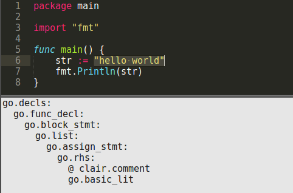

CLQL
A Query Language for Software Systems
CodeLingo Query Language (CLQL) is a simple, lightweight language. It’s full grammar is under 70 lines of code.
{kind=link}
Query Generation
CodeLingo's Integrated Development Environment (IDE) plugins can help build patterns in code by automatically generating queries to detect selected elements of programs. A generated query will describe the selected element and its position in the structure of the program:

In the above example string literal is selected. The generated CLQL query will match any literal directly inside an assignment statement, in a function declaration, matching the nested pattern of the selected literal.
Features
Querying with Facts
CLQL can query many types of software related systems. But assume for simplicity that all queries on this page are scoped to a single object oriented program.
Queries are made up of Facts. A CLQL query with just a single fact will match all elements of that type in the program. The following query matches and returns all classes in the queried program:
@ clair.comment
common.class({depth: any})
It consists of a single fact common.class. The name class indicates that the fact refers to a class, and the namespace common indicates that it may be a class from any language with classes. If the namespace were csharp this fact would only match classes from the C# lexicon. The depth range {depth: any} makes this fact match any class within the context of the query (a single C# program), no matter how deeply nested.
The decorator @ clair.comment tells CLAIR (CodeLingo AI Reviewer) to make a comment on every class found.
Note: for brevity we will omit the common namespace. This can be done in .lingo files by importing the common lexicon into the global namespace: import codelingo/ast/common/0.0.0 as _.
Fact Properties
To limit the above query to match classes with a particular name, add a "name" property as an argument to the method fact:
@ clair.comment
method({depth: any}):
name: "myFunc"
This query returns all methods with the name "myFunc". Note that the yield tag is still on the method fact - properties cannot be returned, only their parent facts. Also note that properties are not namespaced, as their namespace is implied from their parent fact.
Facts with arguments are proceeded by a colon.
Floats and Ints
Properties can be of type string, float, and int. The following finds all int literals with the value 8:
@ clair.comment
int_lit({depth: any}):
value: 5
This query finds float literals with the value 8.7:
@ clair.comment
float_lit({depth: any}):
value: 8.7
Comparison
The comparison operators >, <, ==, >=, and <= are available for floats and ints. The following finds all int literals above negative 3:
@ clair.comment
int_lit({depth: any}):
value: > -3
Regex
Any string property can be queried with regex. The following finds methods with names longer than 25 characters:
@ clair.comment
method({depth: any}):
name: /^.{25,}$/
Fact Nesting
Facts can be take arbitrarily many other facts as arguments, forming a query with a tree struct of arbitrary depth. A parent-child fact pair will match any parent element even if the child is not a direct descendant. The following query finds all the if statements inside a method called "myMethod", even those nested inside intermediate scopes (for loops etc):
method({depth: any}):
name: "myMethod"
@ clair.comment
if_stmt({depth: any})
Any fact in a query can be yielded. If class is yielded, this query returns all classes named "myClass", but only if it has at least one method:
class({depth: any}):
name: “myClass”
@ clair.comment
method({depth: any})
Any fact in a query can have properties. The following query finds all methods named "myMethod" on the all classes named "myClass":
class({depth: any}):
name: “myClass”
@ clair.comment
method({depth: any}):
Name: “myMethod”
Depth
Facts use depth ranges to specify the depth at which they can be found below their parent. Depth ranges have two zero based numbers, representing the minimum and maximum depth to find the result at, inclusive and exclusive respectively. The following query finds any if statements that are direct children of their parent method, in other words, if statements at depth zero from methods:
method({depth: any}):
@ clair.comment
if_stmt({depth: 0:1})
This query finds if statements at (zero based) depths 3, 4, and 5:
method({depth: any}):
@ clair.comment
if_stmt({depth: 3:6})
A depth range where the maximum is not larger than the minimum, i.e., ({depth: 5:5}) or ({depth: 6:0}), will give an error.
Depth ranges specifying a single depth can be described with a single number. This query finds direct children at depth zero:
method({depth: any}):
@ clair.comment
if_stmt({depth: 0})
Indicies in a depth range can range from 0 to positive infinity. Positive infinity is represented by leaving the second index empty. This query finds all methods, and all their descendant if_statements from depth 5 onwards:
method({depth: any}):
@ clair.comment
if_stmt({depth: 5:})
Note: The depth range on top level facts, like method in the previous examples, determines the depth from the base context to that fact. In this case the base context contains a single program. However, it can be configured to refer to any context, typically a single repository or the root of the graph on which all queryable data hangs.
Branching
The following query will find a method with a foreach loop, a for loop, and a while loop in that order:
@ clair.comment
method({depth: any}):
for_stmt
foreach_stmt
while_stmt
Negation
Negation allows queries to match children that do not have a given property or child fact. Negated facts and properties are prepended by "!". The following query finds all classes except those named "classA":
@ clair.comment
class({depth: any}):
!name: "classA"
This query finds all classes with String methods:
@ clair.comment
class({depth: any}):
!method:
name: “String”
The placement of the negation operator has a significant effect on the query's meaning - this similar query finds all methods with a method that is not called String:
@ clair.comment
class({depth: any}):
method:
!name: “String”
Negating a fact does not affect its siblings. The following query finds all String methods that use an if statement, but don’t use a foreach statement:
@ clair.comment
method({depth: any}):
name: “String”
if_stmt
!foreach_stmt
A fact cannot be both yielded and negated.
Or
A fact with multiple children will match against elements of the code that have child1 and child2 and child3 etc. The “or” operator overrides the implicit "and". The following query finds all String methods that use basic loops:
@ clair.comment
method({depth: any}):
name: “String”
or:
foreach_stmt
while_stmt
for_stmt
Variables
Facts that do not have a parent-child relationship can be compared by assigning their properties to variables. Any argument starting with “$” defines a variable. A query with a variable will only match a pattern in the code if all properties representing that variable are equal.
The following query compares two classes (which do have a parent-child relationship) and returns the methods which both classes implement:
class({depth: any}):
name: “classA”
@ clair.comment
method:
name: $methodName
class({depth: any}):
name: “classB”
method:
name: $methodName
The query above will only return methods of classA for which classB has a corresponding method.
Interleaving
When writing a Tenet in a .lingo file read by CLAIR, only the AST lexicon facts are required:
lexicons:
- vcs/codelingo/git
- ast/codelingo/cs
tenets:
- name: all-classes
match:
project:
@ clair.comment
class
CLAIR adds the repository information to the query before searching the CodeLingo Platform:
lexicons:
- vcs/codelingo/git
- ast/codelingo/cs
query:
git.repo:
name: “yourRepo”
owner: “you”
host: “local”
git.commit:
sha: “HEAD”
project:
@ clair.comment
class
Every query to the CodeLingo platform itself starts with VCS facts to instruct the CodeLingo Platform on where to retrieve the source code from.
Git (and indeed any Version Control System) facts can be used to query for changes in the code over time. For example, the following query checks if a given method has increased its number of arguments:
git.repo:
name: “yourRepo”
owner: “you”
host: “local”
git.commit:
sha: “HEAD^”
project:
method:
arg-num: $args
git.commit:
sha: “HEAD”
project:
@ clair.comment
method:
arg-num: > $args
Examples
CSharp
Iterative code, such as the following, can be more safely expressed declaratively using LINQ. For example:
decimal total = 0;
foreach (Account account in myAccounts) {
if (account.Status == "active") {
total += account.Balance;
}
}
can be expressed with:
decimal total = (from account in myAccounts
where account.Status == "active"
select account.Balance).Sum();
The CLQL to match this pattern should find all variables that are declared before a foreach statement, and are incremented within the loop. The facts for incrementing inside a foreach loop, and declaring a variable can be generated in the IDE:


Then the generated code can be turned into a working query by combining the above queries under the same file and scope, removing extraneous facts, and using a CLQL variable to ensure that the cs.variable facts are refering to the same variable:
cs.file:
cs.block_stmt:
cs.assign_stmt:
cs.decl_stmt:
cs.variable:
name: $varName
@ clair.comment
cs.foreach_stmt:
cs.increment_by_expr:
cs.variable:
name: $varName
C++
The following tenet asserts that functions should not return local objects by reference. When the function returns and the stack is unwrapped, that object will be destructed, and the reference will not point to anything.
The following query finds this bug by matching all functions that return a reference type, and declare the returned value inside the function body:
<cc.func_decl:
cc.func_header:
cc.return_type:
cc.reference
cc.block_stmt:
cc.declaration_stmt:
cc.variable:
name: $returnedReference
cc.return_stmt:
cc.variable:
name: $returnedReference